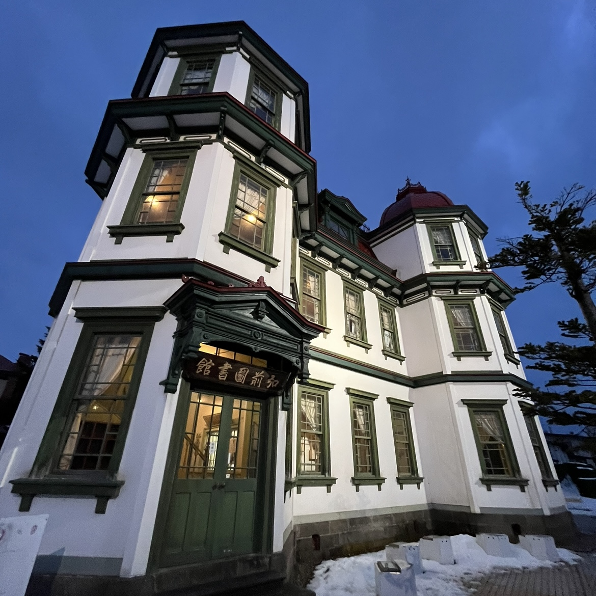
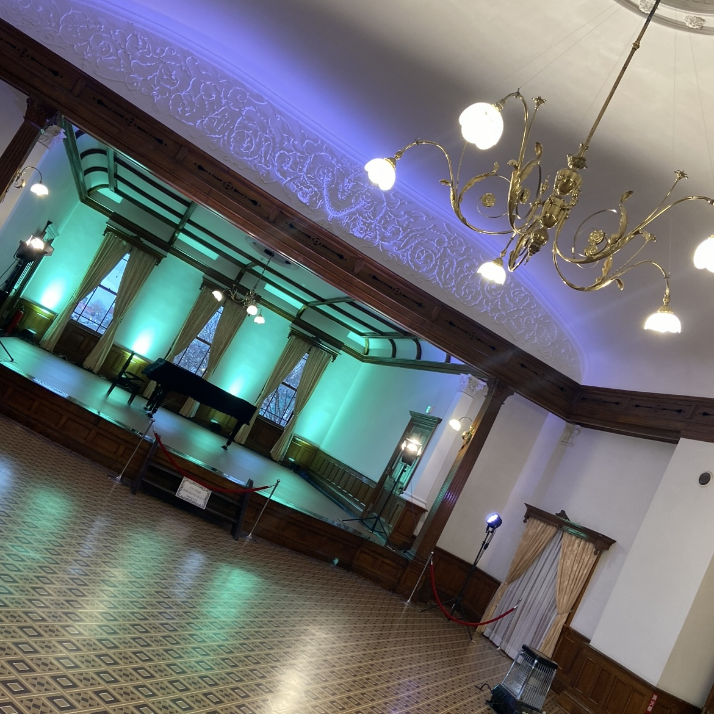
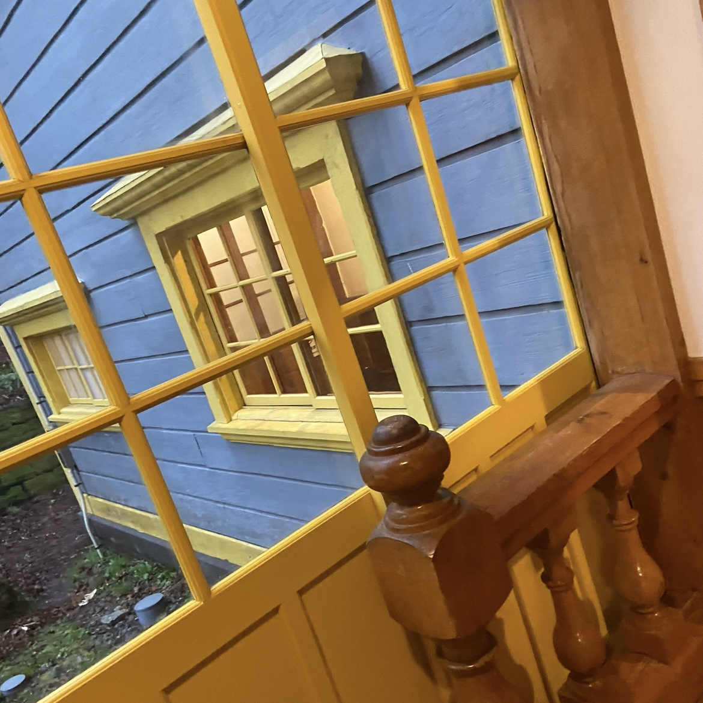
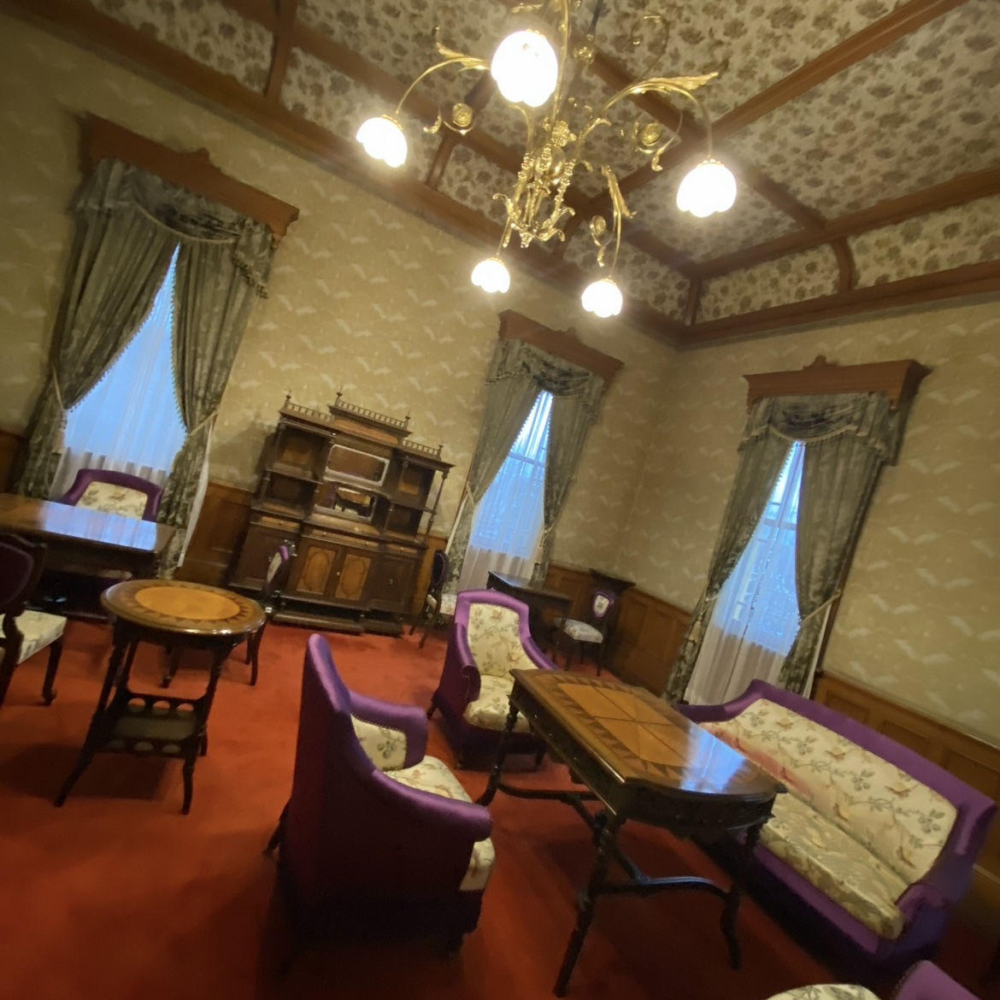

近代建築紹介
旧弘前市立図書館

青森・弘前市に位置。明治39年に建てられ、昭和6年まで市立図書館として利用されました。設計・施工は堀江佐吉で、木造洋風3階建で、八角形の双塔をもつルネサンス様式を基調としながら、随所に和風様式が取り入れられています。
最大の特徴は赤色の屋根と緑の装飾です。比較的こじんまりとした空間にもさまざまな工夫が詰め込まれ、外観も相まってシルバニアの世界を体験しているようです。
photo gallery


